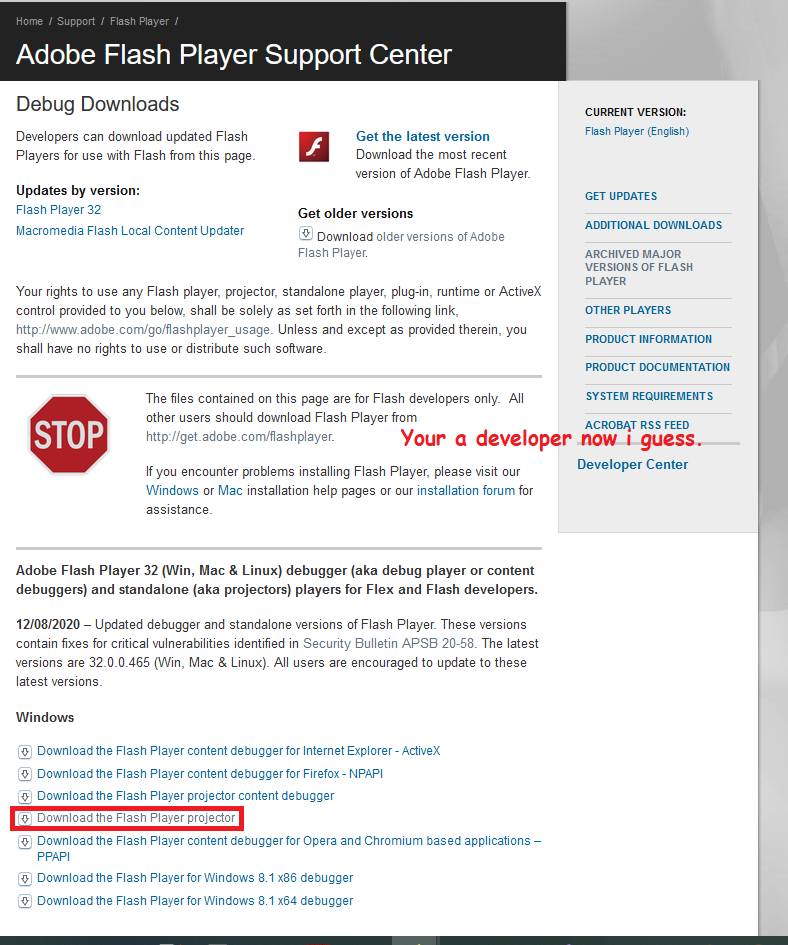
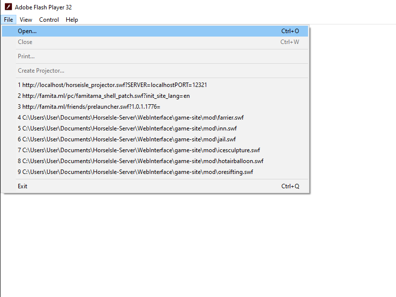
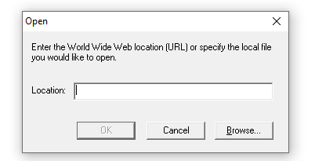

Adobe flash in 2021 and beyond!
1) Download the "Flash Projector" (which is basically just a standalone version of Flash Player)
from the following site:
Flash Player Debug Downloads
2) Click the one labeled Download flash projector without anything else added to it

3) Open the program you should see a blank white window,
with a few options at the top
4) Goto File -> Open

5) Enter the direct URL to the main swf file for whatever game you want to play-

Direct SWF Urls: